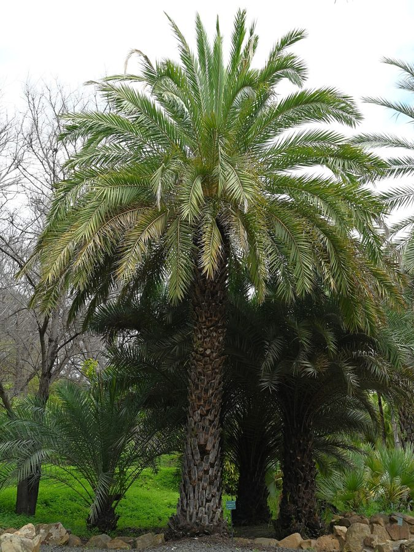

खजूरWild Date Palm
Phoenix sylvestris · Arecaceae · FLR-0042

- Scientific name
- Phoenix sylvestris (L.) Roxb.
- Family
- Arecaceae
- Hindi
- खजूर
- Status here
- native
- IUCN
- not evaluated
When to look कब देखें
Present all year.
खजूर / Wild Date Palm
Phoenix sylvestris (L.) Roxb. — Arecaceae
खजूर (वाइल्ड डेट पाम) — उत्तर प्रदेश के मैदानी इलाकों, नदी के किनारों और खेतों की मेड़ों पर उगने वाला एक बहुत ही महत्वपूर्ण और बहुपयोगी देशी ताड़ (palm tree) है। इसका तना सीधा और मजबूत होता है, जो पुराने गिरे हुए पत्तों के आधारों (persistent leaf bases) से ढका रहता है, जिससे यह खुरदरा दिखाई देता है। इसके सिर पर भूरे-हरे, कांटों जैसे पत्तों (fronds) का एक बड़ा मुकुट होता है। वसंत ऋतु में इसमें पीले रंग के फूलों का बड़ा गुच्छा (spadix) आता है, जो गर्मियों की शुरुआत में छोटे, अंडाकार खजूरों में बदल जाता है। फल पकने पर चमकीले पीले-नारंगी हो जाते हैं। यह पेड़ स्थानीय पारिस्थितिकी का एक प्रमुख स्तंभ है, जो पक्षियों को घोंसला बनाने और चमगादड़ों को शरण देने का काम करता है। ग्रामीण इलाकों में इसके तने से निकलने वाले रस से ताड़ी और गुड़ बनाया जाता है।
Quick Identification त्वरित पहचान
| Feature | Description |
|---|---|
| Form | Solitary, unbranched palm tree (10–15 m); trunk is thick and completely covered with persistent, stair-like leaf bases |
| Leaves | Pinnate fronds (3–4.5 m long), dusty green-grey, clustered in a large dense crown; leaflets are stiff, sharply pointed, and arranged in multiple planes |
| Spines | The base of each leaf frond carries sharp, hard, yellow spines (modified leaflets) up to 10 cm long |
| Flowers | Dioecious (male and female on separate trees); tiny, yellow-white, arranged on large, branched, drooping stalks |
| Fruit | Small oblong drupe (1.5–2.5 cm long); orange-yellow when ripe; contains a single grooved seed |
| Root System | Thick, dense network of fibrous roots that bind soil tightly |
Field tip: Any solitary wild palm tree in eastern UP with a trunk covered in sharp, step-like leaf bases and carrying a large crown of stiff, needle-tipped leaves is a Wild Date Palm.
Morphology आकारिकी
Biometrics (typical measurements for adult specimens in eastern UP plains):
| Feature | Measurement |
|---|---|
| Tree height | 10–15 m |
| Leaf (frond) length | 3–4.5 m |
| Leaflet length | 15–35 cm; Width: 2–3 cm |
| Flower spadix length | 60–90 cm |
| Fruit dimensions | 1.5–2.5 cm length; 8–12 mm diameter |
Trunk: Cylindrical, 20–30 cm in diameter, marked by the bases of shed leaves. It does not grow branches, growing only from the single apical bud at the very top.
Leaves: The crown contains 50–100 fronds. The leaflets (pinnae) are linear, folded, and end in a very sharp, woody spine. The lower leaflets are modified into heavy spines (acanthophylls) that point in various directions, acting as a defense barrier.
Associated Species / Interactions सहजीवी संबंध
Ecological keystone species.
- Nesting anchor: The Asian Palm Swift (
[BRD-0042 Asian Palm Swift]) nests almost exclusively on the underside of living palm fronds, using saliva to glue its nest to the leaves. - Nest protection: The sharp spines at the leaf bases protect nesting birds (like baya weavers
[BRD-0005]relatives and doves) from tree-climbing snakes and mongoose predators. - Roosting site: Flying foxes (
[MAM-0001 Indian Flying Fox]) and insectivorous bats ([MAM-0014 Indian Pipistrelle]) roost in the dense frond crown during the day. - Frugivore attraction: Ripe orange date fruits are eaten by Bulbuls, Jungle Babblers (
[BRD-0035 Jungle Babbler]), Common Mynas ([BRD-0006]), and civets ([MAM-0012 Small Indian Civet]), which help disperse the seeds.
Life Cycle / Phenology जीवन चक्र
- Vegetative growth: Grows slowly year-round, producing new fronds from the center of the crown.
- Flowering: Large spadices emerge from the leaf bases in early spring (January–March). Male trees release clouds of yellow pollen into the wind.
- Fruiting: Female flowers develop into green fruits that grow through the summer, ripening into sweet orange-yellow drupes in May–June.
- Foliage cycle: Older outer fronds turn brown and dry, hanging downward before falling or being trimmed.
Pests and Diseases कीट और रोग
- Red Palm Weevil: The larvae of the weevil (Rhynchophorus ferrugineus) bore into the soft tissue of the apical bud, which can kill the palm.
- Rhinoceros Beetle: Adults chew into the developing fronds, leaving V-shaped cuts when the leaves expand.
- Lethal Yellowing: A phytoplasma disease that causes leaf yellowing and premature fruit drop.
Agricultural / Human Relevance कृषि प्रासंगिकता
Agroforestry and cottage industries.
- Toddy tapping: Tappers cut a V-shaped notch into the soft tissue just below the crown during winter (November–February) to collect the sweet sap (neera). The fresh sap is boiled to make dark palm sugar (gur/jaggery) or fermented to produce local palm wine (toddy/tadi).
- Leaf crafts: The tough leaves are harvested systematically, dried, and split to weave baskets, traditional hand-fans (pankha), and coarse mats (chatai) in cottage industries.
- Brooms: Leaf midribs are tied together to make sturdy outdoor brooms.
Traditional and Ethnobotanical Use
- Nutritional fruit: The fresh orange fruits, though containing less pulp than commercial dates (Phoenix dactylifera), are collected and eaten by children as a rich source of sugar, iron, and vitamins.
- Medicinal roots: A decoction of the roots is used in traditional medicine as a diuretic and to treat toothaches.
- Sap health drink: Fresh unfermented neera collected before sunrise is consumed as a cooling health tonic to treat anemia and general weakness.
Expected Locally स्थानीय रूप से अपेक्षित
Not a field record. Written from published accounts for eastern Uttar Pradesh. No confirmed local sighting yet — if you have seen it, that is what the atlas needs.
अभी तक स्थानीय पुष्टि नहीं। यह विवरण प्रकाशित स्रोतों से है, किसी अवलोकन से नहीं।
Commonly seen along the elevated bunds of paddy fields and sandy floodplains of the Ghaghra River throughout Basti district. Tapping activities (pots hanging from palm trunks) are common in winter. The palms are also left standing in pastures as they do not shade surrounding crops heavily.
Distribution वितरण
Global range: Native to the Indian Subcontinent, occurring in Pakistan, India, Nepal, Bhutan, Bangladesh, and Myanmar.
In India: Widespread in plains and lower hills, especially common in western and northern plains.
In Uttar Pradesh: Abundant in all districts, particularly in river floodplains.
In Basti district / eastern UP: Highly common resident in all blocks, often marking field boundaries.
Research Questions शोध प्रश्न
- What is the preference of Cypsiurus balasiensis (
[BRD-0042]) for nesting on Phoenix sylvestris compared to other trees in Basti? / बस्ती में ताड़-चट्री पक्षी घोंसला बनाने के लिए अन्य पेड़ों की तुलना में जंगली खजूर को कितनी प्राथमिकता देता है? - How does the winter sap-tapping process affect the long-term growth and fruit yield of Phoenix sylvestris? / सर्दियों में रस निकालने (tapping) की प्रक्रिया से खजूर के पेड़ के विकास और फल उत्पादन पर क्या प्रभाव पड़ता है?
- What is the density of fibrous roots of Phoenix sylvestris required to stabilize loose sand along canal borders?
- Do palm leaf weavers in Basti prefer leaves from wild palms or managed boundary palms for quality basketry?
- Can children identify male versus female palm trees in their village based on the shape of their flowers in spring? — A simple, educational dioecious plant mapping project.
Similar Species मिलती-जुलती प्रजातियाँ
| Species | Key Difference | हिंदी |
|---|---|---|
| Phoenix dactylifera (Commercial Date Palm) | Trunk is taller and produces offshoots (suckers) at the base; leaves are longer; fruits are much larger, fleshy, and highly sweet; native to West Asia. | पिंड खजूर — बड़ा फल, मीठा स्वाद |
| Borassus flabellifer (Palmyra Palm) | Trunk is completely smooth and blackish-grey (lacks leaf bases); leaves are large, fan-shaped (not pinnate); fruits are large, black, round nuts. | ताड़ / ताड़ी का पेड़ — चौड़े पंखे जैसे पत्ते |
| Phoenix acaulis (Stemless Date Palm) | Extremely small; trunk is subterranean or very short (under 50 cm); leaves are short; found in dry sal forests. | भूत खजूर — तना रहित, छोटा आकार |
Taxonomy & Classification वर्गीकरण
Original description. William Roxburgh described the Wild Date Palm as Phoenix sylvestris in 1832 in his Flora Indica (Vol. 3, p. 787), transferring it from Carl Linnaeus's Elate sylvestris (1753). The type locality was India. The genus name Phoenix is the ancient Greek name for the date palm. The specific name sylvestris is Latin for "of the forest" or "wild."
Subspecies. Monotypic — no subspecies are currently recognised.
Family and order placement. Placed in the order Arecales, family Arecaceae (palm family), subfamily Coryphoideae, tribe Phoeniceae.
Phylogenetic notes. The genus Phoenix contains approximately 14 species. Phoenix sylvestris is closely related to the commercial date palm (P. dactylifera) and readily hybridizes with it where their cultivation overlaps.
IUCN status rationale. Not evaluated (NE) by the IUCN Red List. It is an abundant and widely distributed native species in South Asia, facing no conservation threats.
Photo Gallery फोटो गैलरी
References संदर्भ
- Roxburgh, W. (1832). Flora Indica; or descriptions of Indian plants. Vol. 3, p. 787. [original description]
- Brandis, D. (1906). Indian Trees. Archibald Constable & Co., London.
- Hooker, J. D. (1892). The Flora of British India. Vol. 6. L. Reeve & Co., London.
- Blatter, E. (1926). The Palms of British India and Ceylon. Oxford University Press, London.
- Botanical Survey of India. State Flora Series: Flora of Uttar Pradesh. BSI, Kolkata.
- GBIF Occurrence Data — Phoenix sylvestris, South Asia (2026). GBIF taxon key: 5293177.
Source file: species/flora/trees/wild_date_palm.md